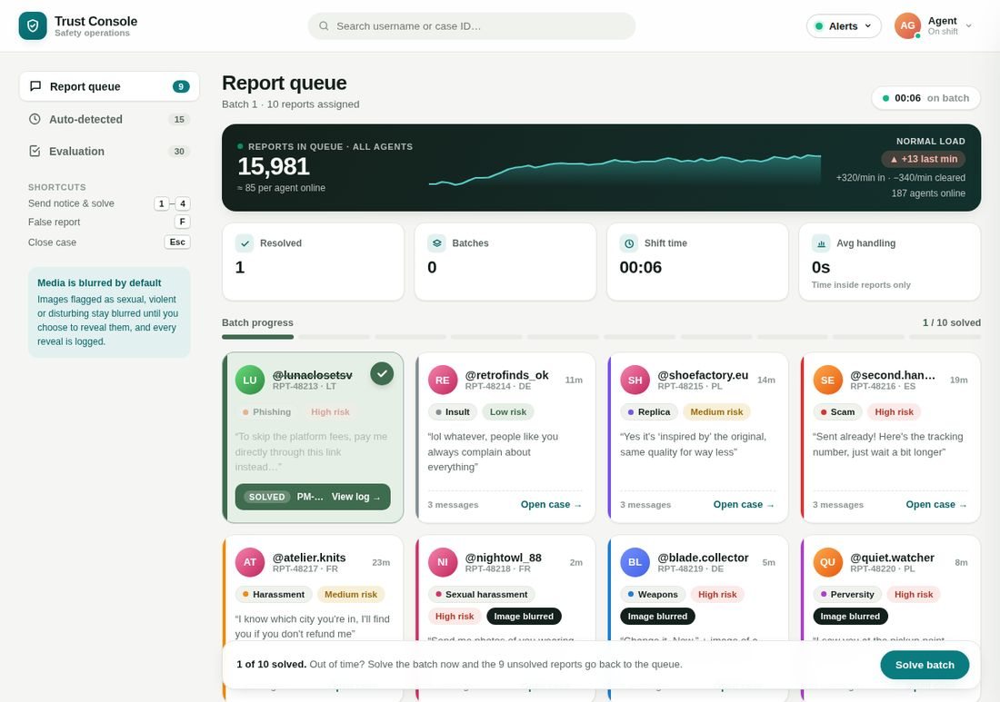
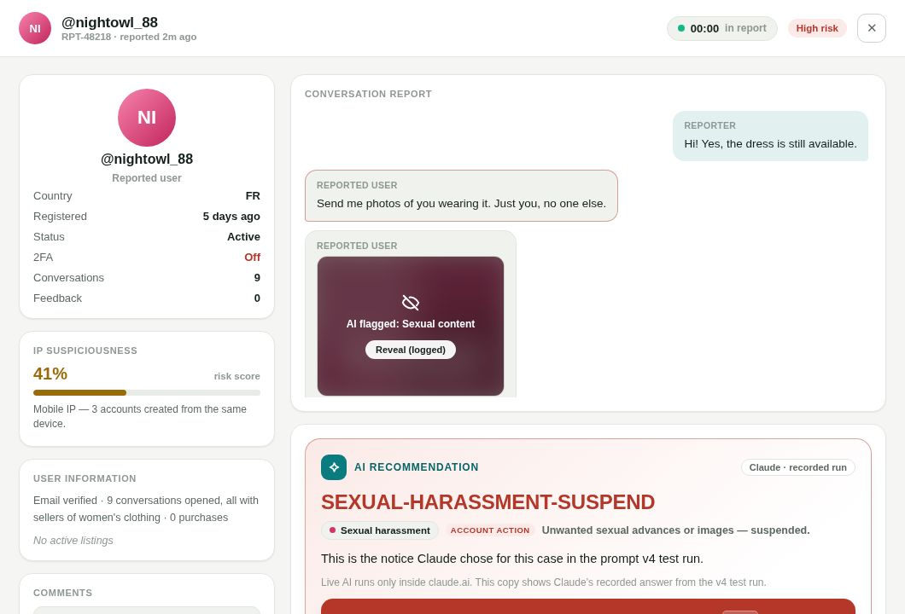
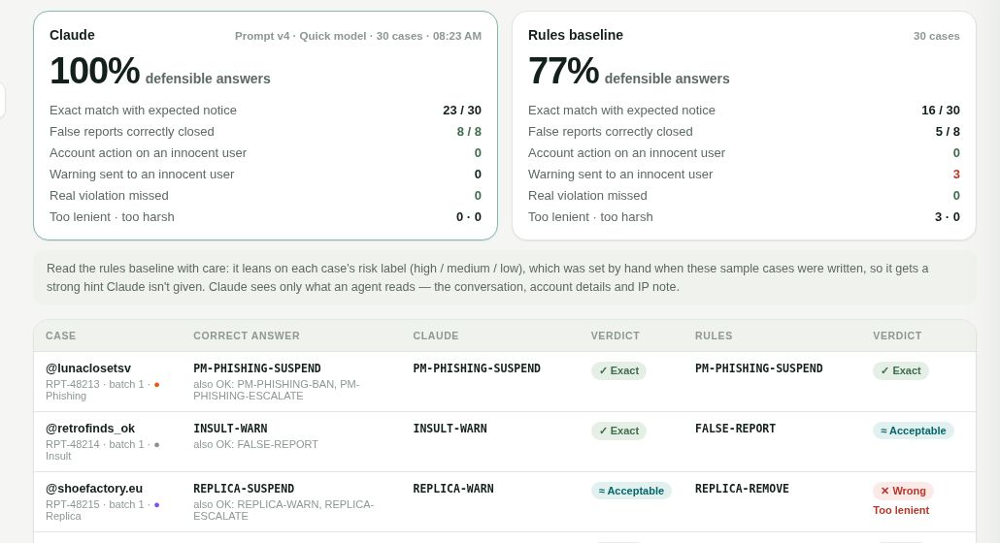

Julius Merzlikinas
Trust & Safety specialist building AI tools for moderation work
Kaunas, Lithuania
I review scams, harassment and suspicious activity on a large second-hand marketplace every day. I'm interested in where AI can take repetitive work off moderators' hands, and where it shouldn't be trusted to decide.
Trust Console: AI-assisted report triage
A working prototype of a moderation console where Claude recommends one action per report, a person makes the final call, and every decision is logged. I tested the prompt against 30 hand-labelled cases until it held up.
The live AI runs inside claude.ai. This hosted demo works for anyone without an account: its recommendation card replays the answers Claude gave in the final test run, and says so.

The problem
Moderation work in batches is repetitive in ways that wear people down. Every case opens cold, so you read the account, the history and the whole conversation before you can judge anything. Many reports turn out to be false. Choosing the right response from a long list of notices takes time and invites inconsistency between agents. And the most obvious spam accounts are often never reported at all, because they haven't messaged anyone yet.
I wanted to see how much of that AI could take on safely, and to be honest about the parts it can't.
What it does
Recommends one notice per case
Claude reads the conversation and account details, then suggests a single notice with a one-line reason and the message it based that on. Enter sends it; any other notice is one keypress away.
Keeps people in control
Notices use fixed, pre-approved wording. Flagged images stay blurred until an agent chooses to look, and every reveal is recorded. The log notes whether the agent followed or overrode the AI.
Catches spam nobody reports
A second queue flags suspicious signups before they act. Only accounts with several strong warning signs are suspended automatically, and a person can confirm or undo each one.
Measures the work fairly
Handling time only counts while a report is open, and lunch or meetings pause every timer, so the numbers reflect real work rather than time at a desk.

Where AI helps, and where plain automation is enough
Most of the console doesn't need AI at all. Deciding which parts do was the most useful design decision.
| Part | Approach | Why |
|---|---|---|
| Recommending a notice | Claude with a tested prompt | Judging tone, intent and context in a conversation is where rules fall short. |
| Flagging images | Image classifier plus always-on blur | Protects moderators from harmful content. The label can be wrong, so a person decides. |
| Suspending spam signups | Detector score and strict rules, with undo | Needs to be instant and cheap. Running Claude on every signup would be slow and costly. |
| Keybinds, logging, timers, batch controls | Plain automation | These tasks have one right answer. AI would only add cost and risk. |
Testing the prompt
A prompt that works in a demo can fail in daily use, so I wrote 30 test cases with the correct answer for each, including eight false reports designed to tempt the AI into punishing an innocent person. Every prompt change was scored against the full set.
The first version was good but too lenient on two cases. I added rules to fix them, and the score went down: one new rule was worded too broadly and suspended an account that only deserved a warning, and another answer warned an innocent reviewer. Without the test set I would have shipped that version believing it was better. The fourth version narrowed the rules and gave a defensible answer on every case.

A fair caveat: I wrote both the cases and the answer key, and later prompts were tuned with those cases in view. Real reports are messier, so the next step is a fresh set the prompt has never seen, including messages in Lithuanian, Polish and French.
What would need sign-off before real use
- Sending member conversations to an AI model, and how long that data is kept.
- Suspending accounts automatically, even with a person reviewing afterwards.
- The wording of every notice, since members read them.
- Who owns the prompt and the answer key once the tool is handed over.
What I'd do differently in a real rollout
I'd start smaller. Rather than a new console, the first version would be a Claude project that agents use alongside their existing tools. I'd only integrate it further once the share of recommendations agents actually follow proves it helps. The remaining pattern in the results, a lean towards milder notices for repeat offenders, is a policy question for the team rather than a prompt bug.
How I built it
I designed the workflow, wrote the test cases and answer key, and decided every rule and trade-off. I built it iteratively with Claude as my coding partner, the same way I'd expect a non-engineering team to build with an approved AI toolset. All data in the demo is invented.
Experience
-
Junior Content Trust & Safety Specialist
June 2025 – presentTranscom, Kaunas
- Review user activity, transactions and conversations to spot scams, suspicious behaviour and policy violations.
- Investigate complex and sensitive cases, weighing evidence, context and potential impact before deciding.
- Look for patterns across cases to identify recurring abuse and emerging risks.
- Handle personal data and high-impact decisions with care and confidentiality.
-
Customer Success Manager
October 2023 – September 2024CyberCare, cybersecurity services
- Main point of contact for customers, resolving questions and problems from first contact to fix.
- Worked out the root cause of customer issues and passed them clearly to internal teams.
- Handled difficult conversations calmly and kept relationships strong.
Education
Vocational education in Office Administration, Lithuania
Languages
Lithuanian (native), English (C1)